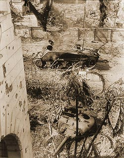

|
j
a v a s c r i p t |
Pg.2/3
February 22, 1945

Topless Sherman
I biked home via Harrison then down Dakota and into a totally devastated Malate. Only the McMicking house and the big Admiralty, Michel and Elena Apartments were intact. The latter had only been taken the night before and was still being closely guarded. The disabled Sherman Tank was still in Herran. Directly in front of it, the UP (University of the Philippines) and government buildings showed the scars of a serious battle. . . . . I delivered notes to Mike and Ethel Meier, and later to Theo and Cyma Meyer. Hearing news of her old friends in Santa Mesa, Cyma had a good cry on my shoulder. I stayed for a drink and Theo's story: My God, it was a miracle we lived. On Saturday the 10th, we had a barrage here that almost finished us. We gave ourselves up for lost.... Americans were shelling us from two sides. We spent eight awful days but after Saturday we gave up hope. One more barrage like that and our luck wouldn't stand. Well, early Sunday morning somebody from another house shouted that he'd seen Americans. 'Americans,' I said to my wife, 'the guy's shell-shocked!' But the other party insisted so I went to look. On the street I ran into the dead body of John Cooke, a friend of mine who had apparently been trying to reach Del Pan from a burned out factory and was shot (8:00 to 9:00 PM, Saturday) probably by a Japanese sniper. Then Theo came across several GIs. "My Gawd! Where'd you come from?" asked one. — "I live here." — "How many are you?" — "Oh, about 30 hereabouts." "And you're NOT KILLED?" said the astonished GI. "We pumped 8,000 shells into this beach area." Theo took me upstairs to see a direct hit. "But this must have come from the Boulevard — a Japanese shell," I said. "No, no, the Eleventh Airborne saw it and said it was American." Well, that's Theo's story. None of the houses on Del Pan burned, but from the Polo Club down† there was devastation. Shells from the Eleventh Airborne had apparently passed over Del Pan, missing it by a few yards. . . . . † heading north |
|
|
|
|